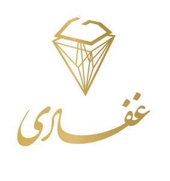

Trade Mark Journal No.2025/018 2 May 2025
UK00004188371 13 April 2025 (14,35,40,42)

- Class 14
- Bracelets for watches; Bracelets [jewellery]; Bracelets [jewelry]; Pendant watches; Necklaces [jewelry]; Necklaces [jewellery]; Bangle bracelets; Bracelets [jewellery, jewelry (Am.)]; Necklace charms; Choker necklaces; Jewelry clips for adapting pierced earrings to clip-on earrings; Bracelet charms; Earrings; Necklaces [jewellery, jewelry (Am.)]; Watch bracelets; Pendants [jewelry]; Necklaces; Clasps for jewelry; Pendants [jewellery]; Scarf clips being jewelry; Identification bracelets [jewelry]; Brooches [jewelry]; Jewelry brooches; Brooches being jewelry; Bracelets; Jewellery rope chain for bracelets; Jewellery chain of precious metal for bracelets; Jewellery rope chain for necklaces; Bead bracelets; Charms [jewellery, jewelry (Am.)]; Rings [jewellery, jewelry (Am.)]; Jewellery chain of precious metal for necklaces; Silver earrings; Brooches [jewellery, jewelry (Am.)]; Amberoid pendants being jewellery; Silver necklaces; Silver-plated earrings; Jewelry charms; Charms for jewelry; Charms [jewelry]; Silver-plated bracelets; Silver-plated necklaces; Clasps for jewellery; Rings [jewelry]; Silver bracelets; Pearls [jewellery, jewelry (Am.)]; Gold necklaces; Amber pendants being jewellery; Gold earrings; Identification bracelets of precious metal [jewelry]; Jewelry; Clip earrings; Rings being jewellery; Rings [jewellery]; Wristlets [jewellery]; Charms for jewellery; Jewellery charms; Charms [jewellery]; Amulets [jewellery, jewelry (Am.)]; Gold bracelets; Jewelry stickpins; Brooches [jewellery]; Jewellery brooches; Pearls [jewelry]; Bracelets and watches combined; Pins [jewellery, jewelry (Am.)]; Trinkets [jewellery, jewelry (Am.)]; Silver thread [jewellery, jewelry (Am.)]; Jewellery chain of precious metal for anklets; Chains [jewellery, jewelry (Am.)]; Plastic bracelets in the nature of jewelry; Ornaments [jewellery, jewelry (Am.)]; Gold-plated necklaces; Lockets [jewellery, jewelry (Am.)]; Jewellery rope chain for anklets; Hat jewelry; Diamond jewelry; Bib necklaces; Gold thread [jewellery, jewelry (Am.)]; Amulets [jewelry]; Clips of silver [jewellery]; Medallions [jewellery, jewelry (Am.)]; Hat jewellery; Lockets [jewelry]; Bracelets made of embroidered textile [jewelry]; Pendants for watch chains; Wristlet watches; Wooden bead bracelets; Pearls [jewellery]; Paste jewelry [costume jewelry]; Ivory [jewellery, jewelry (Am.)]; Gold-plated earrings; Jewelry (Paste -) [costume jewelry]; Gold plated brooches [jewellery]; Beads for making jewelry; Jewellery; Bracelets made of embroidered textile [jewellery]; Silver watches; Cloisonné jewellery [jewelry (Am.)]; Paste jewellery [costume jewelry (Am.)]; Paste jewellery [costume jewelry [Am.]]; Wrist watches; Jewelry hat pins; Wrist straps for watches; Straps for wrist watches; Bangles; Pierced earrings; Amulets being jewellery; Amulets [jewellery]; Trinkets [jewelry]; Dress watches; Wire of precious metal [jewellery, jewelry (Am.)]; Beads for making jewellery; Lockets [jewellery]; Metal expanding watch bracelets; Ring bands [jewellery]; Ornaments [jewellery]; Jewellery hat pins; Earrings of precious metal; Pewter jewellery; Agate as jewellery; Pins being jewelry; Pins [jewelry]; Trinkets [jewellery]; Jewel pendants; Gold plated bracelets; Gold plated earrings; Jewelry chains; Chains [jewelry]; Jewellery, including imitation jewellery and plastic jewellery; Flexible wire bands for wear as a bracelet; Jade [jewellery]; Rings [jewellery] made of precious metal; Threads of precious metal [jewellery, jewelry (Am.)]; Rhinestones for making jewelry; Sterling silver jewellery; Costume jewelry; Silver thread [jewelry]; Jewellery in the form of beads; Decorative brooches [jewellery]; Costume jewellery; Cloisonne jewellery; Plastic costume jewellery; Imitation jewellery ornaments; Cabochons for making jewellery; Jewellery chain; Cabochons for making jewelry; Enamelled jewellery; Fitted jewelry pouches; Gold jewellery; Shoe jewellery; Jewellery made from silver; Rings [jewellery] made of non-precious metal; Items of jewellery; Jewellery items; Pins [jewellery]; Pins being jewellery; Dress ornaments in the nature of jewellery; Jewellery incorporating diamonds; Jewellery chains; Chains [jewellery]; Imitation jewelry; Shoe jewelry.
- Class 35
- Wholesale services relating to jewelry.
- Class 40
- 3 D reproduction services; Remastering of films from one format to another; Generators (Electricity -) rental of ; 3D printing services; Digital printing services; Printing services; Three-dimensional printing [3DP] services; 3D printing; Photographic restoration services; Stationery printing services; Photocomposition services; Typesetting services; Custom 3D printing for others; Photographic reproduction; Information services relating to the printing of photographic film; Embroidery services; Rental of 3D printers; Providing information relating to photographic printing services; Photographic laboratory services.
- Class 42
- Jewelry design; Design of jewellery; Design of furniture; Furniture design; Design of clothing; Jewellery design services; Design of artwork; Fashion design; Design of furnishings; Design of fashion accessories; Design of stationery; Design of sculptures; Design of costumes; Interior design; Design of interior decor; Decor (Design of interior -); Interior decor design; Design of interior decoration; Design of clothing accessories; Architectural design; Design of ornamental layouts; Design of products; Dress design; Graphic art design; Design and graphic arts design for the creation of web sites; Shop interior design; Design of interior decor for shops; Architectural design for interior decoration; Packaging design; Design of packaging; Shop design; Graphic design; Hardware design; Interior decorating design; Design services for furniture; Interior design services for boutiques; Design of shopfittings; Styling [industrial design]; Design of prostheses; Industrial art design; Visual design; Construction design; Design of typefaces; Design of shops; Interior design services; Toy design; Clothing design services; Design services for clothing; Design of china; Design of headgear; Design of prototypes; Design of layouts for office furniture; Art work design; Design of instruments; Commercial art design; Industrial and graphic art design; Design of websites; Product design; Design of software; Software design; Designing of jewellery; Design of carpets; Design services for architecture; Architecture design services; Dress design services; Design services for art-work; Engineering design; Website design; Design of tools; Graphic design services; Kitchen design; Architectural design for exterior decoration; Design of models; Architectural design services; Textile design services; Design of moulds; Automotive design; House design; Design of engineering products; Design services relating to interior decoration; Footwear design services; Commercial interior design; Design of cars; Graphic arts design; Design (Graphic arts -); Design of building interiors; Industrial design; Design (Industrial -); Logo design services; Design services; Interior design services for shops; Pattern design; Office furniture design; Consultancy relating to selection of furnishing fabrics [interior design]; Fashion design consulting services; Design of kitchens; Design and development of prostheses; Design services (Packaging -); Design services for packaging; Packaging design services; Design and development of endoprostheses; Design of curtains; Furnishing design services; Preparation of architectural design; Custom design services; Hat design; Design of hotels; Design of boats; Aircraft design; Design planning; Consultancy relating to selection of loose covers for furniture [interior design]; Illustration services (design); Design of tooling; Design consultancy; Design of ornamental structures; Planning [design] of shops; Design of buildings; Packaging designs; Website design and development; Design and graphic arts design for the creation of web pages on the Internet; Design of industrial products; Urban design; Design of restaurants; Design of space-truss structures; Design of computers; Space planning [design] of interiors; Computer design; Design services for building interiors; Brand design services; Design of bathrooms; Design and development of multimedia products; Cake design services; Design and development of engineering products; New products (Design of -); Design of protective clothing; Design of puppets; Design services relating to shop interiors; Graphic illustration design services; Office layout design services; Tool design; Closet design services; 3D scanning services; Design services relating to the reproduction of documents; Rendering of computer graphics (digital imaging services); Photogrammetry services; Graphic art services; Cartography services; Services for the design of maps; Services for reproducing computer programs; Design services relating to window graphics; Design services relating to artwork; Quality control of goods and services; Computer graphics design services; Computer graphics services; Commercial design services; Services for the digitalization of maps; Consultancy services relating to quality control; Advisory services relating to computer software used for printing; Design services for display systems for exhibition; Design services for exhibitions; Computer design services; Product design services; Design services relating to the creation of networks; Design services for computers; Design services for display systems for promotional purposes; Retail design services; Shopfitting design services; Design services relating to computers; Development services in the field of computer software and advisory services relating thereto; Interior design services and information and advisory services relating thereto; Calibration services; Design services relating to computer systems.
GHAFARI LTD